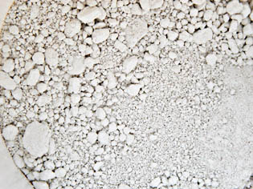
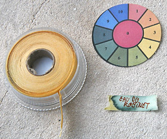
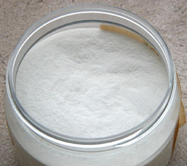

Ce produit est apprécié car
son comportement fiable est bien connu depuis des
millénaires. Il faut cependant bien veiller à
l'employer à bonne escient, respecter ses
spécificités. Ce n'est pas une colle-liant
ultramoderne, multi-usages et multi-supports !
Pour plus
d'informations sur la chimie de la caséine,
lire le chapitre III
des Dialogues de Dotapea, Caséine, phosphore et
dissociation.
Caractéristiques
Diluant,
solvant, dissolvant de la caséine : nous avons
l'habitude de placer cette rubrique dans tous les
articles concernant les liants. Cependant le terme
de solvant a un
sens particulier en ce qui concerne ce produit. La
caséine "brute" nécessite en effet
l'adjonction d'une substance - appelé "solvant" à
tort
ou imprécisément - pour pouvoir être diluée par la
suite par l'eau. Lire passage
ci-dessous.
L'acétone utilisée
massivement peut, comme
l'alcool à
brûler, être considérée comme un dissolvant. L'ammoniaque est un
solvant, au sens où il met en solution la caséine
brute, ni plus, ni moins.
Seuls
le calcium et le baryum (les deux éléments alcalinoterreux
les moins inutilisables) "fixent" la caséine et ils
doivent être utilisés en quantités importantes. Une
caséine demeurant soluble après plusieurs semaines ou
mois pourrait en quelque sorte "manquer
d'alcalinoterreux".
Note : La
caséine mêlée au formol
produit une substance peu commune et très dure, la galalithe. Le formol, en
tant qu'élément de différentes procédés de
fabrication, est un durcissant.
La caséine donne une touche bien précise et un film
généralement très solide, dur. Elle convient
idéalement aux supports
eux-mêmes durs, solides, présentant un peu ou beaucoup
de porosité tels que le
plâtre ou
surtout le bois car elle est
inattaquable par les vers. Pure ou
mélangée à la chaux,
elle laisse respirer des supports tels que les vieux
murs, qui en ont besoin. Pourtant elle est assez
"imperméable" pour résister (bien sèche) au lavage à
l'éponge.
Grâce à sa solidité, elle peut être poncée. Des enduits
et gessos très
fins peuvent donc être réalisés.
Sa dureté en fait en même
temps un produit fragile, cassant
(->
craquelures, cassures). Il faut à tout prix éviter de
l'employer sur des supports souples
SAUF adjonction de glycérine
ou autre agent assouplissant (voir ci-dessous).
Cette adjonction est à conseiller de toute manière,
mais seulement en
petite quantité si le support ne pose pas de problème
précis et si l'environnement est non acide.
La caséine est constituée de protéines
plus
complètes que celles des gélatines
et présente pour cette raison des caractéristiques
différentes bien que son
origine soit également animale.
Elle est plus dure et après quelques semaines, elle
devient irréversible.
Il est déconseillé de trop la diluer car
l'assemblage des protéines
risque de ne pas se faire lors du durcissement.

Mélanges
Mélanges
de type caséine-chaux
Un intérêt
majeur de l'adjonction de chaux dans la caséine est la diminution
des coûts. La chaux, moins coûteuse, autorise le
traitement de surfaces importantes. Ce mélange est
donc employé depuis très longtemps en peinture
décorative - où elle a des détracteurs, lire un
passage
du chapitre XVI des Dialogues de Dotapea -, mais là
n'est pas sa seule application. Par ailleurs, il
faut mentionner son aspect pratique et sans grand
danger, par opposition aux traitements nécessitant
un recours à des produits alcalins dangereux comme
l'ammoniac par exemple.
Certains
fabricants proposent des mélanges du type Casé-Arti
® - voir photo ci-dessus -, fort
épais et probablement non dépourvu de chaux, dont la
composition précise n'est
malheureusement pas annoncée. Ces produits sont
couramment destiné à l'enduction ou à la peinture
décorative. Certains sont teintés en blanc.
Il est aisé de
réaliser soi-même ce genre de mélanges (lire par
exemple la recette "le badigeon caséine-chaux et ses
variations" ci-dessous).
La chaux est utilisée en amont, comme "pré-solvant"
des variétés brutes de caséine (voir
ci-dessous), donc introduite lors de la
fabrication de la caséine soluble. Exemple :
Recette de
caséine à la chaux à partir de fromage blanc.
Mais il est possible de forcer la dose de chaux,
même au moment de peindre, pour différentes
raisons : coût, aspect, charge électrochimique,
etc.
ATTENTION :
dans tous les cas, le mélange caséine-chaux est très
cassant sans adjonction d'un
agent assouplissant comme la glycérine ou un liant vinylique
(voir
Assouplissant).
La
caséine à la chaux est un très beau mariage qui a
d'autres avantages que le seul coût, assez
faible : la chaux est imputrescible
et la caséine est vermifuge.
La
caséine est transparente, mais la chaux quant à elle
peut
être tantôt assez transparente, tantôt un peu
blanchâtre selon qu'elle est
plutôt grasse ou plutôt maigre, sans compter les
adjuvants éventuels.
Certaines sources évoquent l'enduction
de papier ou de
toile par le mélange caséine-chaux. Ce choix est
véritablement douteux car la toile
et surtout le papier sont très souples alors que le
mélange est extrêmement cassant. Il faudrait maroufler
ces supports en premier lieu ou bien adjoindre un
puissant assouplissant
à l'enduit. Sans cette opération, nous avons constaté
qu'une caséine
mêlée d'ingrédients comme la chaux craquelle au
moindre mouvement appliqué aux supports souples.
La caséine pure est à peine plus souple. On
peut donc conclure sur ce point en suggérant aux
fabricants de ce type de produits de communiquer au
sujet de l'agent assouplissant qu'ils utilisent
éventuellement.
Émulsion
huile-caséine, saponification
--> Voir émulsions
à
la caséine dans l'article liants émulsions.
Peindre
avec de la caséine
Comme nous l'avons dit, la
caséine sert à enduire les support, mais aussi à
peindre. On parle alors
de tempera
à la caséine, puisqu'il s'agit pleinement d'une détrempe.
Bien que tombée en
désuétude, c'est une peinture à part entière qui a
largement fait ses preuves et ne doit pas être
négligée. Elle offre de
splendides veloutés, mais aussi des transparences
remarquables et inattendues.
Les
empâtements ne produisent pas de craquelures
mais de minuscules cratères et des sortes de
paillettes.
Pour qui veut essayer ce
procédé de peinture pour la première fois, une caséine
soluble en poudre et une simple planche de bois
modérément épais suffisent. Un papier épais ou de la
toile peuvent même être employés, pour autant que la
peinture contienne un assouplissant. Mais on peut
aller beaucoup plus loin : travailler sur des
murs entiers, mélanger les liants et effleurer des
techniques telles que la fresque, exploiter tout au
contraire la finesse de la caséine pour fabriquer une
encre,
etc.
Pour les travaux sur de
grandes surfaces, il est conseillé pour des raisons de
coût de fabriquer
soi-même le produit et d'utiliser, si possible,
des mélanges (voir ci-dessus).
Pâte
caséine-bois
C'est un cas particulier.
Elle est employée non comme peinture, mais comme sorte
de "pâte à bois". Elle est utilisé par des sculpteurs
et des décorateurs.
Pour créer cette pâte, on
mélange la caséine
à de la sciure de bois, fine de préférence.
Cela permet non seulement
d'effectuer des
réparations très fines sur des meubles (un emploi
subalterne), mais aussi de
travailler la
pâte sèche exactement comme s'il s'agissait de bois.
On la scie, on la
lime, on la travaille au ciseau et à la gouge !
Nous attirons donc
l'attention de tous les plasticiens sur les ressources
de ce produit très facile à fabriquer et garantissant
une longue conservation.
Manipulation,
recettes
Avertissements
Nous avons tous lu, ici et là,
différentes recettes bourrées
d'imprécisions. Nous ne voulons pas en être le relais.
Par exemple, il est
particulièrement essentiel de spécifier de quelle forme
de caséine on parle,
car, comme nous allons le voir ci-dessous, il en existe
plusieurs.
Comme entrée en matière, nous indiquerons
quelques informations essentielles :
* IMPORTANT
De nos jours, les
produits à la caséine
sont le plus souvent vendus sous forme soluble et ne
nécessitent aucun recours à des " produits chimiques".
Ils se présentent
généralement sous la forme de poudres qu'il faut
mettre en solution
par adjonction d'une eau chimiquement neutre (eau
distillée, testée au papier
tournesol - voir photo ci-contre).
Ces solution sont généralement très alcalines, mais
pas toujours. Il est
donc conseillé dans tous les cas de tester le
pH du produit final avant
d'y incorporer du pigment, et de choisir celui-ci en
conséquence. Lorsque la solution est fortement
alcaline, la palette
doit le plus souvent être restreinte à celle de la
peinture à fresque (pour
consulter une liste de ces pigments, cliquer ici).
Nous préconisons une attitude précautionneuse afin
d'éviter les catastrophes picturales.
*
"Pré-solvants"
L'ammoniaque, le carbonate
d'ammonium, le borax,
la potasse ou plus simplement la chaux
éteinte et, à l'opposé, différents acides
purs sont en quelque sorte des "pré-solvants" :
ils servent à permettre ultérieurement la mise en
solution de la caséine en partant des variétés
brutes : caséine "chimique" insoluble et
caséine "faite maison" avec du petit lait ou du
fromage blanc. La particularité de la chaux est de
jouer simultanément un véritable rôle plastique en
tant que liant. Elle a
probablement été le premier "pré-solvant" de la
caséine.
Xavier de Langlais
mentionne l'emploi d'acide acétique pur, c'est-à-dire
vraiment non dilué. Nous ne sommes pas sûrs qu'ajouter
un acide à une substance qui l'est déjà donne en fin
de traitement un produit très fiable et facile
d'emploi, mais tout est possible à condition
d'expérimenter préalablement.
*
L'eau
L'eau employée avec la caséine ne doit
jamais être acide, sans quoi des sels risquent de se
former (lire article).
Pour des travaux "précieux", l'idéal est l'eau
distillée.
* L'assouplissant
Avec la cassante caséine, un
assouplissant est nécessaire dans la plupart des
cas : le bois et même les murs bougent, et que
dire du papier ou de la toile ?
La glycérine est
employée le plus souvent. Ne réagissant qu'en présence
d'acide, elle est bien adaptée à cette peinture qui
est fréquemment alcaline. Les esters, eux, peuvent
réagir en présence de bases (voir Saponification),
aussi les liants à peindre traditionnels ou
synthétiques sont ils moins conseillés.
* Précisions
Selon diverses sources, toute préparation à base de
caséine exclurait l'emploi
d'outils
ou de récipients métalliques pour
des raisons
de compatibilité chimique. Ces précautions
pourraient en fait s'appliquer
seulement aux caséines dites
"insolubles", c'est à dire toutes celles qui n'ont
pas encore été traitées avec des éléments alcalins.
Naturellement acides
(avant traitement, répétons-le),
elles peuvent en
effet réagir en présence de métaux et d'oxygène.
Certains fabricants de produits à la caséine
rendus solubles en atelier conseillent d'attendre
une heure pour les appliquer après mise en
solution dans l'eau.
*
Sécurité
La manipulation de certains des produits
évoqués ci-dessous nécessite des précautions
rigoureuses et bien adaptées.
Concernant les produits les plus usuellement employés
comme la caséine soluble et la chaux éteinte, il ne
s'agit pas de substances particulièrement dangereuses,
mais il est préférable d'éviter les contacts cutanés
répétés ainsi que l'ingestion ou l'inhalation. Ils ne
doivent pas être stockés en des lieux accessibles aux
enfants et aux animaux.
Recette
de caséine à la
chaux à partir de fromage blanc
* voir
Avertissements
(ceci n'est pas une précaution juridique : des
informations très utiles y figurent, notamment sur
les pigments à employer et la qualité de l'eau)
* égoutter
un fromage blanc frais de taille moyenne (environ 200
ml 1) - certaines
recettes spécifient qu'il ne doit pas contenir de
matières grasses. En effet, plus le fromage est gras,
plus il y a de probabilités de saponification
de stéarine au détriment
de la formation de
sels lors de l'ajout de l'alcali.
De plus, le savon stéarique (utilisé en savonnerie)
offre un réel risque d'hygroscopie
excessive.
*
bien
l'écraser en mélange avec 10 g (environ) de chaux
éteinte en pâte ayant la consistance d'un plâtre frais
*
ajouter de 0 (rare) à 2 ou 3 volumes d'eau selon
la consistance désirée. Il est en théorie possible de
faire sécher intégralement le mélange et de l'hydrater
par la suite, mais nous ne disposons pas de
témoignages de ce procédé (n'hésitez pas à nous
écrire si vous avez pratiqué une telle
expérience).
Les proportions caséine/chaux sont données à titre
indicatif, sachant qu'une importante quantité de chaux
prête plutôt à
un emploi comme enduit. Il faut noter aussi que le degré
d'égouttement et de séchage avant (rare) et/ou après
(souvent de l'ordre de quelques jours au réfrigérateur)
l'opération peut varier selon les recettes et les
usages. Chacun peut préférer une caséine/chaux plus
gélatineuse que poudreuse et l'utilisent telle quelle.
Il faut cependant rappeler que la caséine a un
comportement particulier en empâtement (description
cliquer ici), surtout sans charges.
L'aspect "fresque" peut
être exploité et renforcé par l'ajout d'un peu de
sable fin (chimiquement
neutre ou légèrement alcalin, surtout si vous incorporez
de la glycérine)
voire d'un peu de blanc
de Meudon ou une
autre marne. Vous
pouvez
même directement substituer à la chaux éteinte un mortier
pour peinture à fresque
(encore plus solide
et plus épais, mais un peu moins fin) si celui-ci
est suffisamment alcalin.
La chaux étant une base assez
forte, c'est elle qui permet la mise en solution, ce qui
rend inutile l'apport d'ammoniac et autres produits
fortement basiques, courant dans les recettes de
caséines.
Notons l'existences de recettes très diverses sur cette
base. Les adjuvants
recommandés sont innombrables et pas forcément utiles.
Recette
à la caséine "chimique"
Emplois : colle, enduit, liant à
peindre
La caséine est parfois vendue sous une forme dite
"insoluble" ou
"chimique" qu'il faut rendre soluble pour l'utiliser
comme liant ou
colle.
* voir
Avertissements
(ceci n'est pas une précaution juridique : des
informations très utiles y figurent, notamment sur
les pigments à employer et la qualité de l'eau)
* une
part de caséine "chimique" servira d'étalon en poids
*
laisser imbiber pendant une heure dans 3
parts d'eau environ (à température ambiante) en
remuant de temps en temps
*
pendant ce temps, diluer 1/5è
de part d'ammoniac dans 2 parts d'eau (attention aux émanations
toxiques : ouvrez les fenêtres,
protégez-vous, tenez les produits à distance du
visage, opérez en milieu calme)
*
verser l'ammoniac dilué dans la caséine
diluée en remuant (éviter les grumeaux). Le mélange
peut mousser
*
ajouter 2 parts d'eau sans cesser de
mélanger
*
laisser reposer.
Avant d'employer cette préparation, lui adjoindre de
l'eau. Pour en
déterminer la quantité, se souvenir simplement que
lorsque la substance devient
sirupeuse (selon Xavier
de Langlais, elle
"doit être de la consistance d'un miel clair, sans
aucun grumeau"), le
produit est pratiquement prêt. Une adjonction de
glycérine (5% du poids total au maximum) et/ou de
nombreux autres produits est faisable.
On trouve des recettes où le carbonate
d'ammonium joue le rôle solvant rempli ci-dessus
par l'ammoniaque. Les
quantités sont très différentes. Exemple : deux
parts de caséine pour une de
carbonate d'ammonium, 16 parts d'eau à verser en deux
fois à quantité égale
à douze heures d'intervalle.
Le
badigeon
caséine-chaux et ses variations
Voir absolument
Badigeon
A propos du mélange
caséine-chaux,
Voir ci-dessus
* Voir
Avertissements (ceci n'est pas une précaution
juridique : des informations très utiles y
figurent, notamment sur les pigments à employer et
la qualité de l'eau)
* Il faut
préparer séparément la caséine soluble et la
chaux (aérienne
en principe, hydraulique
seulement si l'on prévoit beaucoup d'humidité lors du
séchage).
Leurs consistances doivent être sensiblement
identique, entre miel et plâtre.
Compter au moins 1/2 litre de pâte de caséine par
seau de chaux. Prévoyez beaucoup plus de caséine si
vous voulez réaliser un travail plus typiquement
artistique. La proportion peut alors atteindre 30, 50%
ou plus si l'on souhaite obtenir une peinture plus
"fixe", bien solide et permettant aussi un travail
relativement fin.
RAPPEL : le mélange caséine-chaux
est très cassant sans adjonction d'un
agent assouplissant comme la glycérine ou un liant comme le vinyle
ou
l'acrylique (voir Assouplissant).
* Bien mélanger.
Vous obtenez un produit qu'il faudra utiliser bien
dilué si la destination est décorative et la quantité
de caséine, faible. Tout travail en empâtement
nécessiterait l'adjonction d'un produit tel que le
plâtre, un ciment fin ou un liant synthétique adapté.
Dans le cas contraire, donc si la destination du
produit est "plus artistique" et le produit bien
chargé de caséine, on peut appliquer la peinture de
manière habituelle, sans diluer particulièrement et
sans empâter outre mesure. De plus, il n'est pas exclu
de travailler
à fresque.
Il ne faut pas non plus exclure le badigeon
caséine-chaux dilué, traditionnel, de toute démarche
artistique car les vertus de cette très ancienne mixture
lui ont apporté des lettres de noblesse et méritent
d'être exploitées à bon escient - c'est-à-dire moyennant
quelques expérimentations préalables.
Ce produit que
l'on peut aisément transformer, n'est pas dépourvu
d'intérêt sur le plan pédagogique.
Une
recette
"standard" sans chaux avec une caséine soluble
La recette ci-dessous est presque un simple mode
d'emploi.
Ce procédé est principalement destiné à la peinture a
tempera mais rien n'empêche de s'en servir pour
des collages (bois) et
enductions.
Il suppose que l'on dispose d'une
caséine "soluble".
Il est facile de se procurer ce produit dans le
commerce (détaillants spécialisés dans les arts
plastiques), mais on peut aussi
le fabriquer (voir les deux recettes ci-dessus).
* voir
Avertissements
(ceci n'est pas une précaution juridique : des
informations très utiles y figurent, notamment sur
les pigments à employer et la qualité de l'eau)
* une
part de caséine servira d'étalon en poids dans cette
recette
*
diluer la caséine dans 9 parts
d'eau distillée (quantité habituelle) ou selon
les indications du fournisseur
*
mélanger et attendre que la consistance
soit homogène et sirupeuse
*
assouplissant : ajouter 1/2 part de
glycérine au maximum.
Avec des supports bien durs, 1/5è suffit.
*
adjuvants divers : vernis, cires, résines
diverses, etc.

En fait, une caséine soluble achetée dans le commerce
(voir photo) peut être plus alcaline que prévu, même si
son principe actif est
l'acide
phosphorique. On pourrait croire que celui-ci se
trouve à l'état de sel et
donc qu'il devrait se reconstituer en présence d'eau
mais PAS DU TOUT ! La
solution obtenue demeure nettement alcaline
à cause des produits basiques utilisés lors de la
solubilisation.
Précautions utiles : une vérification du
pH du produit en
solution aqueuse neutre (papier
tournesol)
peut à peu de frais indiquer ou contre-indiquer
certains adjuvants.
Le support ne doit pas non plus être acide et doit
être analysé de la même manière.
Adjuvants
typiques et auxiliaires
Différents adjuvants peuvent utilisés sous certaines
conditions (sauf intentions artistiques
particulières de l'ordre de l'aléatoire) :
* les
adjuvants chimiquement neutres devraient être
incorporés de préférence dans un environnement neutre
ou légèrement alcalin
*
les adjuvants fortement acides ne
devraient pas être incorporés sans intention réfléchie
en milieu fortement alcalin ou alcoolisé (éthanol,
glycérine) car cela suscite une réaction chimique de
nature à altérer les produits mis en oeuvre. Dans
certains cas, l'association d'un produit de charge
opposée peut provoquer une neutralisation plus ou
moins stable dans le temps selon les cas. Il est
cependant recommandé de s'assurer du
pH de tous les éléments en présence, y compris l'eau, à l'aide d'un papier
tournesol et de mener quelques tests avec
précaution.
* La
glycérine semble
vraiment un additif intéressant pour la caséine. Voir
Assouplissant.
* Une
huile à peindre permet
d'obtenir
une émulsion
à
la caséine, mais nous déconseillons
radicalement l'emploi de cet adjuvant qui est un ester
réagissant en présence d'alcalis comme la caséine.
* Un
médium à base de dammar
ou
de mastic pourrait être
adjoint, voire aussi un
médium pour la peinture à l'huile à base de résines
synthétiques. Mais les médiums du commerce
contenant pratiquement tous de
l'huile, le comportement du produit fini pourrait
rapidement présenter un comportement
très altéré. Même sans huile,
une résine comme le dammar ou le mastic est assez grasse
en elle-même. Tests préalables conseillés sur une
période très longue.
* Les
cires classiques (abeilles,
carnauba) pourraient aussi être employées moyennant
tests préalables portant sur des durées suffisantes. Les
résultats semblent en effet corrects même après un an,
mais il semble douteux qu'un ester comme une cire puisse
rester indéfiniment insensible à la présence d'un
produit alcalin comme la caséine.
* Un
agent
conservateur est nécessaire dès lors que l'on veut
stocker durablement une caséine
sous forme de pâte. Kevin
Mac Cloud conseille
le fluorure de sodium (1% du poids à sec). Xavier
de Langlais préconise l'essence
de
Mirbane et l'acide phénique neigeux, au sujet
duquel nous manquons
d'informations (merci de nous
fournir
toute information sur ce produit). On sait
cependant que les phénols,
bons antiseptiques, sont aussi toxique et dangereux à la
manipulation.
A
la place de ces produits, nous
conseillons la préparation progressive de quantités
restreintes de pâte en solution : alors
que la caséine se conserve aisément sous forme de
poudre, elle se dégrade trop vite à moitié liquide. Donc
pourquoi en préparer plus que nécessaire ?
* Comme
avec les
autres peintures protéiques, le
formol est un agent durcissant et
imperméabilisant (certains disent même qu'il est
polymérisant - voir catalyseur
polymérisant).
Il peut être incorporé dans le frais ou badigeonné à
sec. L'acétone peut également
être
employée par projection sur la surface sèche. L'alun
- un produit qui a fait ses preuves dans différents
domaines - est mentionné
par plusieurs sources. Comme le formol, il peut être
incorporé directement
dans la caséine lors de la mise en solution.
Voir Enduits et
apprêts, Les colles.
_____
1
Le fromage blanc frais étant surtout composé d'eau, sa
densité moyenne est très proche de 1. On peut donc
approximativement exprimer les quantités en grammes ou
en millilitres indifféremment.
Pour retourner au
corps du texte, cliquez sur le bouton "Précédent" de
votre navigateur
Retour
début de page